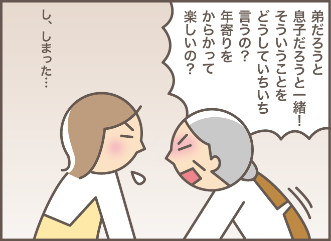
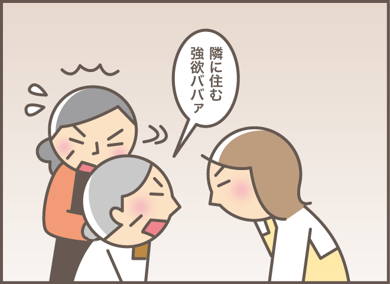
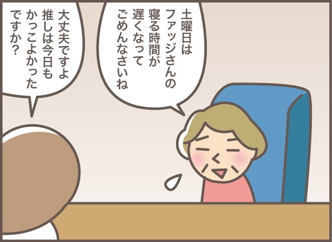
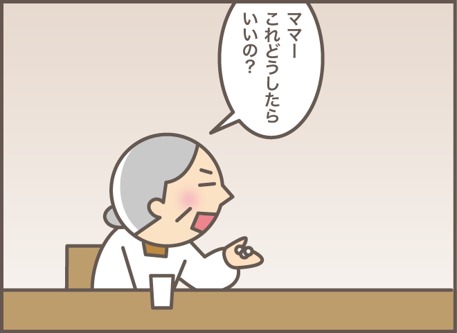
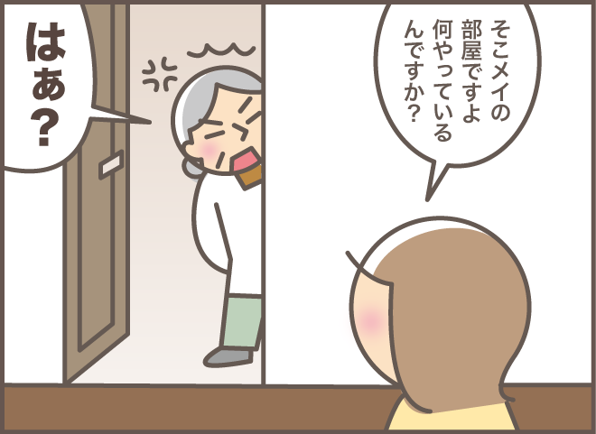
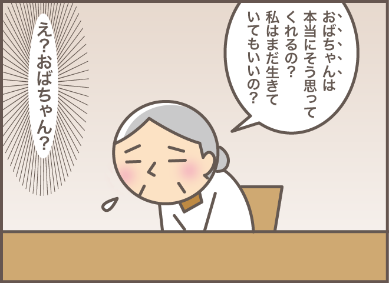
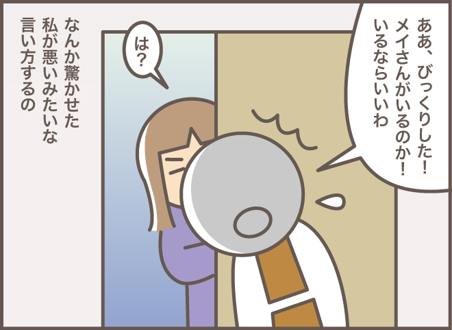
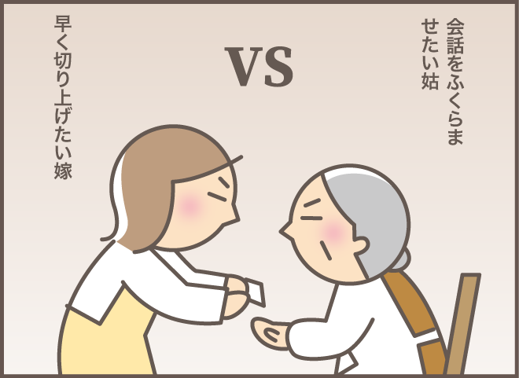
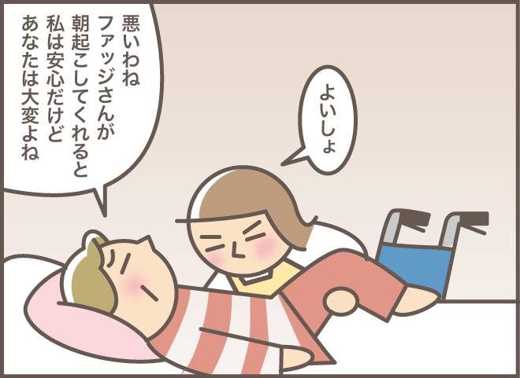
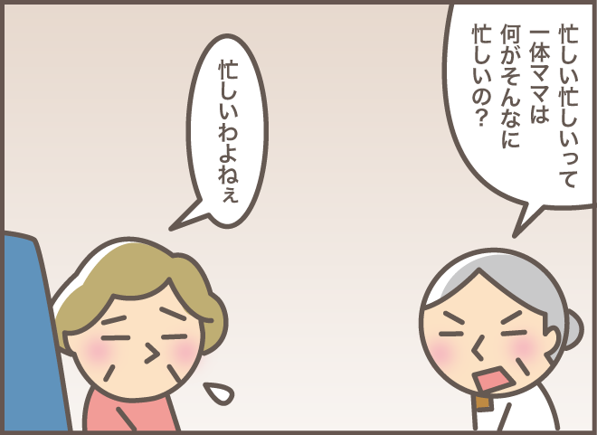

含有关键字“香草软糖”的文章
1-

每个人的经历 发布日期：我的婆婆患有痴呆症，当她的“愤怒开关”打开时，她的日子很难过……
-
每个人的经历 发布日期：
“取笑老人很好玩吗？”我知道给患有痴呆症的婆婆指出错误是没有好处的……
-

每个人的经历 发布日期：我的妻子称我为“住在隔壁的贪婪的老太婆！”我患有痴呆症的婆婆今天过得很好......
-

每个人的经历 发布日期：一位老妇人正在与风湿病和骨质疏松症引起的疼痛作斗争。她的“能量之源”是人气偶像……
-

每个人的经历 发布日期：即使我递药给患有痴呆症的婆婆，她也有意想不到的反应：“我该怎么办？”
-

每个人的经历 发布日期：“你在干什么？”婆婆在孙子的房间里做什么/Vanilla F...
-

每个人的经历 发布日期：“阿姨”就是我！？当我和患有痴呆症的婆婆说话时.../香草...
-

每个人的经历 发布日期：从早到晚，孙子为患有痴呆症的婆婆找到了正确答案。
-

每个人的经历 发布日期：喜欢说话的婆婆VS想赶紧结束谈话的老婆！比赛结果是.../Ba...
-

每个人的经历 发布日期：有很多东西要学！对于需要帮助起床的阿姨“如何有效地表达你的感受”/...
-

每个人的经历 发布日期：“你到底忙什么呢？” “老婆的话”让痴呆婆婆沉默了/巴……